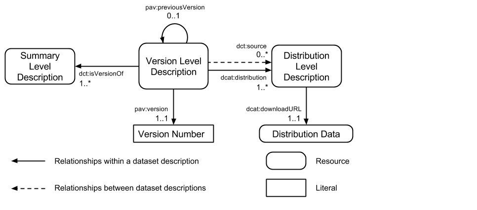

Dataset Descriptions: HCLS Community Profile
- Editors working draft.
- Editors:
- Alasdair J.G. Gray, Heriott-Watt University, UK <A.J.G.Gray@hw.ac.uk>
- Michel Dumontier, Stanford University, USA <michel.dumontier@stanford.edu>
- M. Scott Marshall, MAASTRO Clinic, The Netherlands <m.scott.marshall@maastro.nl>
- Joachim Baran, Stanford University, USA <joachim.baran@stanford.edu>
- Contributors:
- Peter Ansell, CSIRO, Australia <peter.ansell@csiro.au>
- Gary D. Bader, The Donnelly Centre, University of Toronto, Canada <gary.bader@utoronto.ca>
- Asuka Bando, NBDC, Japan <bando@biosciencedbc.jp>
- Jerven Bolleman, SIB Swiss Institute of Bioinformatics, Switzerland <jerven.bolleman@isb-sib.ch>
- Alison Callahan, Carleton University, Canada <alison.callahan@carleton.ca>
- José Cruz-Toledo, Carleton University, Canada <josecruztoledo@cmail.carleton.ca>
- Pascale Gaudet, SIB Swiss Institute of Bioinformatics, Switzerland <pascale.gaudet@isb-sib.ch>
- Erich Gombocz, IO Informatics, USA <egombocz@io-informatics.com>
- Alejandra Gonzalez-Beltran, University of Oxford, UK <alejandra.gonzalez.beltran@gmail.com>
- Paul Groth, VU University Amsterdam, The Netherlands < p.t.groth@vu.nl>
- Melissa Haendel, Oregon Health and Science University, USA <haendel@ohsu.edu>
- Maori Ito, NIBIO, Japan <maori@nibio.go.jp>
- Simon Jupp, EMBL-EBI, UK <jupp@ebi.ac.uk>
- Toshiaki Katayama, Database Center for Life Sciences, Japan <ktym@dbcls.jp>
- Kalpana Krishnaswami, Metaome, USA <kalpana@metaome.com>
- Simon Lin, Marshfield Clinic Research Foundation, USA <lin.simon@mcrf.mfldclin.edu>
- Michael Miller, Institute for Systems Biology, USA <mmiller@systemsbiology.org>
- Chris Mungall, Lawrence Berkeley National Laboratory, USA <cjm@berkeleybop.org>
- Nicolas Le Novère, Babraham Institute, UK <n.lenovere@gmail.com>
- Camille Laibe, EMBL-EBI, UK <laibe@ebi.ac.uk>
- Nick Juty, EMBL-EBI, UK <juty@ebi.ac.uk>
- James Malone, EMBL-EBI, UK <malone@ebi.ac.uk>
- Laurens Rietveld, VU University Amsterdam, The Netherlands <laurens.rietveld@vu.nl>
- Sarala M. Wimalaratne, EMBL-EBI, UK <sarala@ebi.ac.uk>
Copyright © 2014 W3C® (MIT, ERCIM, Keio, Beihang), All Rights Reserved. W3C liability, trademark and document use rules apply.
Abstract
Access to consistent, high-quality metadata is critical to finding, understanding, and reusing scientific data. This document describes a consensus among participating stakeholders in the Health Care and the Life Sciences domain on the description of datasets using the Resource Description Framework (RDF). This specification meets key functional requirements, reuses existing vocabularies to the extent that it is possible, and addresses elements of data description, versioning, provenance, discovery, exchange, query, and retrieval.
Status of This Document
This is an editor's draft of a document for the Semantic Web in Health Care and Life Sciences Interest Group (HCLSIG). This is a live document and is subject to change without notice. It reflects the best effort of the editors to reflect implementation experience and incorporate input from various members of the IG, but is not yet endorsed by the IG as a whole. This document is not endorsed by the W3C or its member companies.
1 Introduction
Big Data presents an exciting opportunity to pursue large-scale analyses over collections of data in order to uncover valuable insights across a myriad of fields and disciplines. Yet, as more and more data is made available, researchers are finding it increasingly difficult to discover and reuse these data. One problem is that data are insufficiently described to understand what they are or how they were produced. A second issue is that no single vocabulary provides all key metadata fields required to support basic scientific use cases. A third issue is that data catalogs and data repositories all use different metadata standards, if they use any standard at all, and this prevents easy search and aggregation of data. Therefore, we need a guide to indicate what are the essential metadata, and the manner in which we can express it.
For the purposes of this document, we define a dataset as "A collection of data, available for access or download in one or more formats" [DCAT]. For instance, a dataset may be generated as part of some scientific investigation, whether tabulated from observations, generated by an instrument, obtained via analysis, created through a mashup, or enhanced or changed in some manner. Research data are available in research publications and supplemental documents, in literature curated databases such as PharmGKB or the CTD, from research repositories such as BioMedCentral-BGI GigaScience [GigaScience], Nature Publishing Group’s Scientific Data [ScientificData], Dryad Digital Repository [Dryad], FigShare [FigShare], Harvard Dataverse [Dataverse]. Cross-repository access is possible through data catalogs such as Neuroscience Information Framework (NIF) [NIF], BioSharing [BioSharing], Identifiers.org Registry [Identifiers.org], Integbio Database Catalog [Integbio], Force11 [Force11], and CKAN’s datahub [Datahub].
While several vocabularies are relevant in describing datasets, none are sufficient to completely provide the breadth of requirements identified in Health Care and the Life Sciences. The Dublin Core Metadata Initiative (DCMI) [DCMI] Metadata Terms offers a broad set of types and relations for capturing document metadata. The Data Catalog Vocabulary (DCAT) [DCAT] is used to describe datasets in catalogs, but does not deal with the issue of dataset evolution and versioning. The Provenance Ontology (PROV) [PROV] can be used to capture information about entities, activities, and people involved in producing a piece of data or thing. The Vocabulary of Interlinked Datasets (VOID) [VOID] is an RDF Schema vocabulary for expressing metadata about RDF datasets. Schema.org has a limited proposal for dataset descriptions [SCHEMA]. Thus, there is need to combine these vocabularies in a comprehensive manner that meets the needs of data registries, data producers, and data consumers.
Here we describe the efforts of a multi-stakeholder effort under the auspices of the W3C Semantic Web for Health Care and Life Sciences [HCLS] Interest Group to produce a specification for the description of datasets that meets key functional requirements, uses existing vocabularies, and is expressed using the Resource Description Framework [RDF]. We discuss elements of data description including provenance and versioning, and describe how these can be used for data discovery, exchange, and query (with SPARQL). This then enables the retrieval and reuse of data to encourage reproducible science.
Specifically, we provide
- A community specification for describing datasets (Section 5) in RDF with detailed guidance notes (Section 6).
- Detailed requirements (Section 4) that have been drawn from a wide range of use cases (Section 8).
2 Scope
This document focuses on common data elements and their value sets for the description of data. Although use cases are drawn from Health Care and the Life Sciences, this document will focus on requirements that are broadly applicable.
3 Conventions
The key words "MUST", "MUST NOT", "REQUIRED", "SHALL", "SHALL NOT", "SHOULD", "SHOULD NOT", "RECOMMENDED", "MAY", and "OPTIONAL" in this document are to be interpreted as described in RFC 2119.
RDF data in this document are expressed in Turtle [TURTLE]. Queries on this data are expressed in SPARQL [SPARQL]. The following namespace prefix bindings are assumed unless otherwise stated:
The letter sequence "###" is used to denote a placeholder for a positive integer (≥ 1) in examples. The integers that replace this surrogate are of type xsd:integer.
4 Functional Requirement
In this section we describe a set of essential functionality that the dataset descriptions must provide.
4.1 Dataset Identification, Description, Licensing, and Provenance
High quality data descriptions are necessary to understand the nature and provenance of data including what the data is, the format the data is represented with, where the data can be retrieved from, what license is associated with the dataset, how it was generated, when it was generated, and who generated it. Importantly, such dataset descriptions should provide globally unique identifiers for specific versions and formats of datasets so that they may be used and referenced by others in downstream analyses.
4.2 Dataset Discovery (via Catalog)
Data consumers need an easy mechanism to find datasets of interest. Data catalogs, identifier indices, and data standard registries such as BioSharing [BioSharing], identifiers.org Registry [Identifiers.org], datahub.io [Datahub], NIF [NIF] are all important infrastructure that make it easier for users to find relevant data and even discuss their quality or utility. The availability of rich metadata will enable users to perform faceted searches of data items by placing restrictions on the values of specific metadata fields.
4.3 Exchange of Dataset Descriptions
Dataset descriptions should be in a standardized format that enables facile exchange between data providers. This allows data catalogs to synchronize and specialize their offerings. For example, BioDBCore [BioDBCore, Gaudet et al 2010] is a community-driven effort overseen by the International Society for Biocuration [ISB], which defines a checklist, or minimum information standard, including the core attributes for the description of biological databases.
4.4 Dataset Linking
The integration of data typically involves establishing a similarity between resources described in different datasets. Since datasets naturally evolve with time, it is important that information regarding the nature of the linking can be adequately captured, e.g. the version and format of files and software used to generate the links.
A dataset may incorporate, or link to, data in other datasets, e.g. in the creation of a data mashup. Rather than repeating the dataset description of the source datasets, the derived dataset would link to the dataset description of the specific instance that they loaded.
4.5 Content Summary
A breakdown of the entities and their relationships in a dataset is useful for communicating the structure and content of the dataset. This information can be used to enable dataset navigation, facilitate query construction and compare different versions of a dataset.
4.6 Monitoring of Dataset Changes
The reproducibility of scientific investigations is often tied to the availability of the original data. However, as original dataset grow or change with time, it becomes important to understand what changes have occurred and how these may affect dependent analyses. A dataset description should provide the means by which to compare different dataset versions.
5 Dataset Description Levels
In this section, we describe the W3C HCLS recommendation for rich descriptions of datasets. There are three levels each covering a different type of resource describing the data:
- Summary Level: The summary level provides a description of a dataset that is independent of a specific version or format.
- Version Level: The version level captures version-specific characteristics of a dataset.
- Distribution Level: The distribution level captures metadata about a specific form and version of a dataset.

Figure 1: An overview of the relationships between dataset description levels. A single summary level description for a dataset will be related to one or more version level descriptions using dct:isVersionOf. Incremental versions may be specified using pav:previousVersion. Each version level description will be linked to one or more distribution level descriptions using dcat:distribution. Derivative and augmented datasets, or dataset mash-ups, make use of dct:source to denote their source datasets.
Note that a distribution is the realisation of the data in a specific file format. The different distributions of a dataset may not be semantically equivalent due to differences between the data formats. For example, a chemical dataset may be released as a rich RDF dataset but also as an SD file. In this case, the SD file will not contain the same data content as the RDF dataset.
The properties expected for each metadata profile are given in the table below.
| Profile |
Property |
Value |
Summary Level |
Version Level |
Distribution Level |
| Core Metadata |
|
|
|
|
|
|
rdf:type |
dctypes:Dataset |
MUST |
MUST |
SHOULD |
|
rdf:type |
void:Dataset or dcat:Distribution |
MUST NOT |
MUST NOT |
MUST |
|
dct:title |
rdf:langString |
MUST |
MUST |
MUST |
|
dct:alternative |
rdf:langString |
MAY |
MAY |
MAY |
|
dct:description |
rdf:langString |
MUST |
MUST |
MUST |
|
dct:created |
rdfs:Literal encoded using the relevant ISO 8601 Date and Time compliant string and typed using the appropriate XML Schema datatype |
MUST NOT |
SHOULD |
SHOULD |
|
pav:createdOn |
xsd:dateTime, xsd:date, xsd:gYearMonth, or xsd:gYear |
MUST NOT |
MAY |
MAY |
|
pav:authoredOn |
xsd:dateTime, xsd:date, xsd:gYearMonth, or xsd:gYear |
MUST NOT |
MAY |
MAY |
|
pav:curatedOn |
xsd:dateTime, xsd:date, xsd:gYearMonth, or xsd:gYear |
MUST NOT |
MAY |
MAY |
|
dct:creator |
IRI |
MUST NOT |
MUST |
MUST |
|
dct:contributor |
IRI |
MUST NOT |
MAY |
MAY |
|
pav:createdBy |
IRI |
MUST NOT |
MAY |
MAY |
|
pav:authoredBy |
IRI |
MUST NOT |
MAY |
MAY |
|
pav:curatedBy |
IRI |
MUST NOT |
MAY |
MAY |
|
dct:issued |
rdfs:Literal encoded using the relevant ISO 8601 Date and Time compliant string and typed using the appropriate XML Schema datatype |
MUST NOT |
SHOULD |
SHOULD |
|
dct:publisher |
IRI |
MUST |
MUST |
MUST |
|
foaf:page |
IRI |
SHOULD |
SHOULD |
SHOULD |
|
schemaorg:logo |
IRI |
SHOULD |
SHOULD |
SHOULD |
|
dct:license |
IRI |
MAY |
MUST |
MUST |
|
dct:rights |
rdf:langString |
MAY |
MAY |
MAY |
|
dct:language |
http://lexvo.org/id/iso639-3/{tag} |
MUST NOT |
SHOULD |
SHOULD |
|
dcat:theme |
IRI of type skos:Concept |
MAY |
MAY |
MAY |
|
dcat:keyword |
xsd:string |
MAY |
MAY |
MAY |
|
void:vocabulary |
IRI |
MUST NOT |
MUST NOT |
SHOULD |
|
dct:conformsTo |
IRI |
MUST NOT |
MAY |
SHOULD |
|
cito:citesAsAuthority |
IRI |
MAY |
MAY |
MAY |
|
dct:hasPart |
IRI |
MAY |
MAY |
MUST NOT |
|
void:subset |
IRI |
MUST NOT |
MUST NOT |
MAY |
| Identifiers |
|
|
|
|
|
|
idot:preferredPrefix |
xsd:string |
MAY |
MAY |
MAY |
|
idot:alternatePrefix |
xsd:string |
MAY |
MAY |
MAY |
|
idot:identifierPattern |
xsd:string |
MUST NOT |
MUST NOT |
MAY |
|
void:uriRegexPattern |
xsd:string |
MUST NOT |
MUST NOT |
MAY |
|
idot:accessPattern |
xsd:string |
MAY |
MAY |
MAY |
|
idot:exampleIdentifier |
xsd:string |
MUST NOT |
MUST NOT |
SHOULD |
|
void:exampleResource |
IRI |
MUST NOT |
MUST NOT |
SHOULD |
| Provenance and Change |
|
|
|
|
|
|
void:inDataset |
IRI of a void:Dataset |
MUST NOT |
MUST NOT |
SHOULD |
|
pav:version |
xsd:string |
MUST NOT |
MUST |
SHOULD |
|
dct:isVersionOf |
IRI |
MUST NOT |
MUST |
MUST NOT |
|
pav:previousVersion |
IRI |
MUST NOT |
SHOULD |
SHOULD |
|
pav:hasCurrentVersion |
IRI |
MAY |
MUST NOT |
MUST NOT |
|
dct:source |
IRI |
MUST NOT |
SHOULD |
SHOULD |
|
pav:retrievedFrom |
IRI |
MUST NOT |
SHOULD |
SHOULD |
|
prov:wasDerivedFrom |
IRI |
MUST NOT |
SHOULD |
SHOULD |
|
pav:createdWith |
IRI |
MUST NOT |
MUST NOT |
MAY |
|
dct:accrualPeriodicity |
IRI of type dctypes:Frequency |
SHOULD |
MUST NOT |
MUST NOT |
| Availability/Distributions |
|
|
|
|
|
|
dct:format |
iana or edam or biosharing or xsd:String |
MUST NOT |
MUST NOT |
MUST |
|
dcat:distribution |
IRI of Distribution Level description |
MUST NOT |
SHOULD |
MUST NOT |
|
dcat:accessURL |
IRI |
MAY |
MAY |
MAY |
|
dcat:landingPage |
IRI |
MUST NOT |
MAY |
MAY |
|
dcat:downloadURL |
IRI |
MUST NOT |
MUST NOT |
SHOULD |
|
void:dataDump |
IRI |
MUST NOT |
MUST NOT |
SHOULD |
|
void:sparqlEndpoint |
IRI |
SHOULD |
SHOULD NOT |
SHOULD NOT |
| Statistics |
|
|
|
|
|
|
void:triples |
xsd:integer |
MUST NOT |
MUST NOT |
SHOULD |
|
void:entities |
xsd:integer |
MUST NOT |
MUST NOT |
SHOULD |
|
void:distinctSubjects |
xsd:integer |
MUST NOT |
MUST NOT |
SHOULD |
|
void:properties |
xsd:integer |
MUST NOT |
MUST NOT |
SHOULD |
|
void:distinctObjects |
xsd:integer |
MUST NOT |
MUST NOT |
SHOULD |
|
sd:namedGraph |
IRI of type sd:NamedGraph |
MUST NOT |
MUST NOT |
SHOULD |
|
void:propertyPartition |
[void:property <IRI>; void:triples "###"^^xsd:integer] |
MUST NOT |
MUST NOT |
MAY |
|
void:classPartition |
[void:class <IRI>; void:entities "###"^^xsd:integer] |
MUST NOT |
MUST NOT |
MAY |
|
void:subset |
IRI of type void:Linkset |
MUST NOT |
MUST NOT |
MAY |
In this section, we discuss each of the properties to be provided for a metadata description and the expected values. To aid our discussion consider the ChEMBL dataset; the complete example is given in Appendix 10.1. ChEMBL is manifested in 17 different versions, of which each version can be accessed in a variety of data formats. Thus, to be fully conformant with this specification, there would be one Summary Level description that is linked to 17 Version Level descriptions, and each of the Version Level descriptions would be linked to their corresponding Distribution Level descriptions. This is captured by the following example expressed in RDF/Turtle format:
# Summary Level Description
:chembl a dctypes:Dataset .
# Version Level Description
:chembl17 a dctypes:Dataset ;
dct:isVersionOf :chembl;
pav:version "17.0";
dcat:distribution :chembl17rdf,
:chembl17relational, :chembl17csv .
# Distribution Level Descriptions
:chembl17rdf a dcat:Distribution, void:Dataset .
:chembl17relational a dcat:Distribution .
:chembl17csv a dcat:Distribution .
We note that we do not expect data sources to generate descriptions for all previously published versions of a dataset due to the effort this would require, e.g. ChEBI has published over 100 versions.
6.1 Literals
6.1.1 Dates
Dates should be given as accurately as possible as an rdfs:Literal.
It is recommended that the value is typed as an xsd:dateTime
(YYYY-MM-DDThh:mm:ss[Z], where [Z] is optionally specified as Z for UTC time or provided as a time zone offset,
e.g. -04:00 for EDT). In the case that the time is not precisely known, we recommend using the relevant
ISO 8601 Date and Time compliant string typed using the
appropriate XML Schema datatype. For example
- Only year is known: '"2013"^^xsd:gYear';
- Year and month is known: '"2013-12"^^xsd:gYearMonth';
- Year, month and day is known: '"2013-12-05"^^xsd:date';
- Year, month, day and timestamp (with timezone): '"2013-12-05T05:32:23-05:00"^^xsd:dateTime'.
6.1.2 Values as Strings
Values should be stated with a language tag, unless capturing an identifier or some structured value, e.g. version identifier. Values may be captured in multiple languages.
6.1.3 Values as Strings or IRIs
For several predicates there is the choice of providing the value as an IRI or a string. We recommend that IRIs are used wherever possible.
6.2 Core Metadata
6.2.1 Dataset Identification and Declaration of Type
It is a good general practice that data represented using Semantic Web technologies be typed as an instance of some class of entities. All summary and version level descriptions are typed as dctypes:Dataset. The distribution level description can also be typed as dctypes:Dataset but needs to be additionally typed as a dcat:Distribution. RDF formatted datasets are typed as an instance of a void:Dataset.
:chembl
rdf:type dctypes:Dataset .
:chembl17rdf
rdf:type void:Dataset .
6.2.2 Title
At least one human-readable title should be provided for a dataset using dct:title. Alternative or older titles may be specified using dct:alternative.
For example, to provide a title and alternative title for the ChEMBL dataset:
:chembl
dct:title "ChEMBL"@en ;
dct:alternative "ChEMBLdb"@en ;
6.2.3 Description
It is expected that the description will be the same as the text that appears on the web page for the dataset (see below). It should be a few paragraphs that explain to a domain expert the contents of the dataset. Where available, the description should be provided in alternative languages, each with the appropriate language tag. For instance, to specify a description for the chembl dataset:
:chembl
dct:description """ChEMBL is a database of bioactive compounds, their quantitative properties and bioactivities
(binding constants, pharmacology and ADMET, etc). The data is abstracted and curated from the primary
scientific literature."""@en .
6.2.4 Dates of Creation and Issuance
It is essential to know when a dataset came into existence. Within the dataset description model, the summary level description is not associated with a creation or issued date, these are associated with the version and distribution level description.
Since some datasets only provide information about when they are made public, it is recommended that at least one of the creation or issued dates MUST be provided. Both MAY be provided. For versioned or distribution dataset descriptions, state the date the dataset was generated using dct:created and/or the date the dataset was made public using dct:issued. For instance, to specify that the chembl17 dataset (see Section 6.2, 6.3, 6.4 and 6.5 for more details about :chembl17 declaration) was issued on 29 August 2013.
:chembl17
dct:issued "2013-08-29"^^xsd:date .
As the time that the dataset was published is unknown, these are set to the beginning of the time period. If only the month and year had been known, the value would have been given as "2013-08-01T00:00:00". Where the time is known, the timezone should be provided.
To state when a dataset (i.e. at the abstract level) was originally created, a version level description representing the first version should be provided which states the orginal creation date of the dataset.
Note that other more specific properties, e.g. the date the dataset was authored or curated, MAY be given in addition using terms from the PAV ontology [PAV].
6.2.5 Authorship, Creation, Curation
Details of the individual or organisation responsible for creating a dataset MUST be provided using the dct:creator property. The value should be an IRI for the individual or organisation that can be resolved for more details. We recommend the use of ORCID ID [ORCID] for researchers.
:chembl17
dct:creator <https://www.ebi.ac.uk/chembl/> .
:chembl_target_targetcmpt_linkset
pav:authoredBy <http://orcid.org/0000-0002-8011-0300> .
If it is not possible to use an existing IRI then a string can be included using the following construct:
:chembl17
dct:creator [
foaf:name "John Smith"
] .
Fine-grained attribution of creation events such as authoring or curation MAY additionally be supplied using the terms from the PAV ontology.
- Authorship: State the author(s) with pav:authoredBy and linking to URIs for the authors. The date of authorship should be given using pav:authoredOn.
- Creation: State the creator(s) with pav:createdBy and linking to URIs for the authors. The date of authorship should be given using pav:createdOn.
- Curation: State the author(s) with pav:curatedBy and linking to URIs for the authors. The date of authorship should be given using pav:curatedOn.
:chembl_target_targetcmpt_linkset
pav:authoredBy <http://orcid.org/0000-0002-8011-0300> ;
6.2.6 Publisher
A link to the entity – viz the person, organisation, or service – responsible for publishing the dataset.
:chembl
dct:publisher <http://www.ebi.ac.uk> .
6.2.7 Webpage and Logo
A link to the human-oriented web page for the dataset is provided using the foaf:page property [FOAF]. The property foaf:homepage must not be used as it could result in the data about different versions of a dataset being combined as it is an inverse-functional property. The example below specifies the chembl dataset is accessible at [ChEMBL].
A link to an image file containing the logo for the dataset is provided using the schemaorg:logo property [SCHEMA.ORG]. The property foaf:logo must not be used since it is an inverse-function property.
:chembl
foaf:page <http://www.ebi.ac.uk/chembl/> ;
schemaorg:logo <http://www.ebi.ac.uk/rdf/sites/ebi.ac.uk.rdf/files/resize/images/rdf/chembl_service_logo-146x48.gif> .
6.2.8 Keywords
Keywords and topics of coverage of the dataset MAY be given. It is recommended that such terms are drawn from a suitable domain vocabulary and declared using the dcat:theme predicate. The dcat:keyword predicate is provided for the rare occasions where there is not a suitable term in a vocabulary.
@prefix ncit: <http://ncicb.nci.nih.gov/xml/owl/EVS/Thesaurus.owl#> .
:chembl
dcat:theme ncit:C48807 ; # chemical
dcat:keyword "chemical"^^xsd:string, "assay"^^xsd:string .
Note that the ncit namespace refers to the National Cancer Institute (NCI) Thesaurus.
6.2.9 Licensing and Rights
The license under which the data is published MAY be stated at the summary level, but MUST be stated at the version and the distribution level. A dataset MAY have one or more licenses, although the provider should ensure that multiple licenses are consistent with each other. The object of the license predicate is the URI of the license. In cases where this is not know, but the dataset version and distribution are available, the following use of a blank node should be used to state that the license is unknown. Any details of a possible point of contact for the license can be given in the comment. We note that this modelling requires human intervention, but since the license is unknown this is appropriate.
<http://example.com> dct:license [ rdfs:comment "License unknown".]
The details of the license may be summarised in a rights statement.
:chembl
dct:license <http://creativecommons.org/licenses/by-sa/3.0/> .
dct:rights """The data in ChEMBL is covered by the Creative Commons By Attribution. Under the -BY clause, we request attribution for subsequent use of ChEMBL. For publications using ChEMBL data, the primary current citation is:
1. A. Gaulton, L. Bellis, J. Chambers, M. Davies, A. Hersey, Y. Light, S. McGlinchey, R. Akhtar, A.P. Bento, B. Al-Lazikani, D. Michalovich, & J.P. Overington (2012) 'ChEMBL: A Large-scale Bioactivity Database For Chemical Biology and Drug Discovery' Nucl. Acids Res. Database Issue. 40 D1100-1107 DOI:10.1093/nar/gkr777 PMID:21948594
If ChEMBL is incorporated into other works, we ask that the ChEMBL IDs are preserved, and that the release number of ChEMBL is clearly displayed."""
6.2.10 Language
Declare the languages the data is published in using dct:language and values taken from the Lexvo.org Ontology [Lexvo].
:chembl
dct:language <http://lexvo.org/id/iso639-3/en> .
6.2.11 Literature Reference
Provide a literature reference as a CiTO entry [CiTO] using cito:citesAsAuthority property. For example, for the :chembl dataset the literature reference is [Gaulton et al 2011].
CiTO provides a wide range of other properties for capturing other aspects of the relationship between the dataset description and the publication.
:chembl
cito:citesAsAuthority <http://nar.oxfordjournals.org/content/40/D1/D1100> .
6.2.12 Vocabularies
RDF datasets use one or more RDFS vocabularies or OWL ontologies to represent the data. It is recommended that the distribution level metadata, for RDF datasets, should state what terminologies were used in the dataset using void:vocabulary [VOID]. The value has to be a URI identifying the terminology used.
:chembl
void:vocabulary <http://rdf.ebi.ac.uk/terms/chembl#>, <http://www.w3.org/ns/dcat#>, <http://purl.org/dc/terms/> .
6.2.13 Conformance
Indicate that the dataset conforms to a particular format or standard using the dct:conformsTo property, which MUST NOT be represented at the summary level, MAY be represented at the version, and SHOULD be represented at the distribution level. For example, the follow states that the ChEMBL description conforms to this specification.
:chembl17
dct:conformsTo <http://www.w3.org/2001/sw/hcls/notes/hcls-dataset/> .
6.2.14 Subsets
The parts of a dataset MAY be described using dct:hasPart. For example, ChEMBL identifies several datasets, e.g. one containing data about molecules and another about targets. Each of these subsets can be assigned appropriate topics.
:chembl17
dct:hasPart :chembl17_rdf_molecule_dataset, :chembl17_rdf_target_dataset .
6.3 Identifiers
6.3.1 Preferred and Alternative Prefixes
A preferred prefix is a short label that is commonly used to refer to the dataset. Such a label may stand in place of the base IRI of the dataset (e.g. see http://prefix.cc). Preferred short names should be specified using idot:preferredPrefix while alternate short names should be specified using idot:alternatePrefix. These properties may be used at any description level.
:chembl
idot:preferredPrefix "chembl";
idot:alternatePrefix "chembldb" .
6.3.2 Identifier, Resource, and Access Patterns
The idot:identifierPattern MAY be provided for distribution level descriptions, where it provides a regular expression for alphanumeric strings used to identify items or records in the dataset.
:chembl17rdf
idot:identifierPattern "CHEMBL\\d+"^^xsd:string .
The void:uriRegexPattern property MAY be provided for distribution level descriptions, where it provides a regular expression whose transitive closure denotes a superset of data item URIs in the dataset.
:chembl17rdf
void:uriRegexPattern "http://rdf.ebi.ac.uk/resource/chembl/target/CHEMBL\\d+" .
The idot:accessPattern MAY be used to specify how to access specific formats of the resources. The access pattern is a base URI upon which the resource identifier is appended in order to generate a valid resource URL. For example, given the identifier CHEMBL25 and an access pattern <http://www.ebi.ac.uk/chembl/compound/inspect/>, then the valid URL would be <http://www.ebi.ac.uk/chembl/compound/inspect/CHEMBL25> To specify that the access pattern is for the primary data provider, set idot:primarySource to true. The access pattern specifies the This can be specified for the most current version, a specific version, or a specific distribution.
:chembl
idot:accessPattern
<http://www.ebi.ac.uk/chembl/compound/inspect/> ,
<http://identifiers.org/chembl.compound/> ,
<http://bio2rdf.org/chembl:> ,
<http://linkedchemistry.info/chembl/chemblid> .
<http://www.ebi.ac.uk/chembl/compound/inspect/>
idot:primarySource true ;
dct:format "text/html" ;
dct:publisher <http://www.ebi.ac.uk> ;
a idot:AccessPattern .
<http://identifiers.org/chembl.compound/>
dct:format "text/html" ;
a idot:AccessPattern .
<http://bio2rdf.org/chembl:>
dct:format "application/rdf+xml" ;
dct:publisher <http://bio2rdf.org> ;
a idot:AccessPattern .
<http://linkedchemistry.info/chembl/chemblid>
dct:format "application/rdf+xml" ;
a idot:AccessPattern .
6.3.3 Example Identifier and Resource
An example identifier SHOULD be provided using the idot:exampleIdentifier for any level descriptions.
:chembl17rdf
idot:exampleIdentifier "CHEMBL25"^^xsd:string .
An example resource SHOULD be provided using the void:exampleResource property for any level description.
:chembl17rdf
void:exampleResource <http://rdf.ebi.ac.uk/resource/chembl/compound/CHEMBL25> .
6.4 Provenance and Change
6.4.1 Versioning
A version level description MUST use the dct:isVersionOf property to relate to the summary level description. The versions of the summary level resource may then be inferred due to the declared inverse property dct:hasVersion.
:chembl17
dct:isVersionOf :chembl .
For each version level description, the version identifier should be declared using pav:version and restrict its value to an xsd:string. For instance, to specify that :chembl17 has a version number of "17":
:chembl17
pav:version "17"^^xsd:string .
A link to the previous version of the dataset SHOULD be provided using pav:previousVersion. This creates a chain of links through the versions of the dataset. For instance, to state that :chembl16 is a prior version of :chembl17, the following triple should be created:
:chembl17
pav:previousVersion :chembl16 .
Data publishers MAY use pav:hasCurrentVersion to declare the current version of the dataset, provided they are the authoritative source of the data and the summary level description is always made current. Data aggregators are advised to maintain the most current summary level description so that only a single such reference appears.
:chembl
pav:hasCurrentVersion :chembl17 .
6.4.2 Dataset Provenance
A version level description of a dataset SHOULD identify the datasets used to create the published data. Use dct:source when the source dataset was used in whole or in part. Use pav:retrievedFrom when the source dataset was used in whole and was not modified from its original distribution. Use prov:wasDerivedFrom when the source dataset was in whole or in part and was modified from its original distribution.
:chembl17
dct:source :pubchem-bioassay-09-01-2014 ;
pav:retrievedFrom :pubchem-bioassay-09-01-2014 ;
prov:wasDerivedFrom :pubchem-bioassay-09-01-2014 .
A distribution level description of a dataset MAY describe a tool used to create the dataset (where appropriate). Details of the specific version of the tool used should be given, either as a versioned URI (e.g. from a GitHub commit) or by providing human interpretable values on a blank node. This information is useful for debugging automatic generation of the dataset. The property to be used for this purpose is: pav:createdWith, which ideally includes a reference to the version of the tool used to create the dataset.
:chembl17rdf
pav:createdWith :chembl-sql2rdf-exporter-v1 .
6.4.3 Entity Provenance
Provenance for each data item SHOULD be provided using the void:inDataset property. It SHOULD be used with distribution level descriptions of RDF distributions that are typed as void:Dataset, and MUST NOT be used for summary level descriptions or version level descriptions.
:chembl-compound
void:inDataset :chembl17rdf .
6.4.4 Change Frequency
The update frequency of the dataset SHOULD be specified using dct:accrualPeriodicity with a value from the Dublin Core Frequency vocabulary [DCFreq]. This description appears at summary level.
:chembl
dct:accrualPeriodicity freq:quarterly .
Note that the change frequency is an indication of the update interval, not a contractual obligation.
6.4.5 Modifications
It is recommended that modifications are NOT made to a dataset without changing its version information. If changes are required, a new version with its own description MUST be published, and the previous version information SHOULD be maintained with a link back to it from the version that superseded it.
:chembl17-1
pav:previousVersion :chembl17 .
6.5 Availability and Distributions
6.5.1 Distributions and Formats
Each version level description SHOULD link to the distribution level descriptions that represent the files in different data formats. Each distribution level MUST state the file format in which the data is available. This SHOULD be stated as a IANA code [IANA-MT] otherwise dct:format should be used with different values (e.g. a URI from a controlled vocabulary).
In the case of RDF distributions, the distribution level description should be additionally typed as void:Dataset.
:chembl17
dcat:distribution :chembl17rdf, :chembl17db .
:chembl17rdf
a dctypes:Dataset, void:Dataset ;
dct:format "text/turtle" ;
dct:format <http://www.w3.org/ns/formats/Turtle> ;
dct:format "application/gzip" .
:chembl17db
a dctypes:Dataset ;
dct:format "application/sql" .
6.5.2 File Locations
It is recommended to use dcat:downloadURL to declare the distribution file in conjunction with dcat:byteSize to declare the size of the file. For RDF resources, the files should be declared using void:dataDump. Use dcat:accessURL to specify a directory containing the file(s) of interest.
# Summary level declaration
:chembl
dcat:accessURL <ftp://ftp.ebi.ac.uk/pub/databases/chembl/ChEMBLdb> .
# Version level declaration
:chembl17
dcat:accessURL <ftp://ftp.ebi.ac.uk/pub/databases/chembl/ChEMBLdb/releases/chembl_17/> .
# Distribution level declaration
:chembl17sql
dcat:downloadURL <ftp://ftp.ebi.ac.uk/pub/databases/chembl/ChEMBLdb/releases/chembl_17/chembl_17_mysql.tar.gz> ;
dcat:byteSize "861443887"^^xsd:decimal .
:chembl17rdf
void:dataDump <ftp://ftp.ebi.ac.uk/pub/databases/chembl/ChEMBL-RDF/17/chembl_17_molecule.ttl.gz> .
6.5.3 Query Endpoint
Publishers may also provide their data through a SPARQL endpoint. We recommend that such an endpoint should have a service description [SD] and this should link to the distribution level description that is currently loaded (see Figure 1).
SPARQL endpoints may optinally follow VOID deployment guidelines.
Below is an example based on the one given in Section 6.5 of the VOID guidelines [VOID] to indicate how this may be achieved for the default graph of a triplestore.
:service
a sd:Service ;
sd:defaultDatasetDescription [
a sd:Dataset ;
sd:defaultGraph [
a sd:Graph ;
dct:source :chembl17rdf ;
] ;
] .
Note that once the file is loaded into the triplestore it becomes a different representation of the same dataset version. Hence the use dct:source rather than directly linking to the dataset description file.
We recommend that the void:sparqlEndpoint SHOULD be used at the summary level. However, we recommend that this property SHOULD NOT be used at the version and/or distribution level, unless there is a commitment to specifically provide that content in the specified endpoint.
6.5.4 Dataset Documentation
Details of documentation associated with a dataset – either for the dataset itself or a web service through which it is made available – can be given using the dcat:landingPage predicate.
:chembl17
dcat:landingPage <ftp://ftp.ebi.ac.uk/pub/databases/chembl/ChEMBLdb/releases/chembl_17/chembl_17_release_notes.txt> .
6.6 Statistics
Dataset statistics offer one means by which to understand the contents of the dataset and their relation to other datasets. Below we provide recommendations for the capture of dataset statistics for RDF formatted files using the VoID vocabulary. These statistics can be computed on an RDF dataset using the provided SPARQL queries [VOID-SPARQL]. The results of the SPARQL queries can be added to the description of the RDF-formatted dataset.
6.6.1 Core statistics
Core statistics provide basic information about datasets, such as the total number of triples in the dataset, number of unique entities (subject URIs), etc., as well as information about the number of unique classes, literals, and graphs in a dataset.
To specify the number of triples in the dataset:
:rdfdataset
void:triples "###"^^xsd:integer .
SPARQL query:
SELECT (COUNT(*) AS ?no) { ?s ?p ?o }
To specify the number of unique entities (an entity must have a URI) in the dataset:
:rdfdataset
void:entities "###"^^xsd:integer .
SPARQL query:
SELECT COUNT(distinct ?s) AS ?no { ?s a [] }
To specify the number of unique subjects in the dataset:
:rdfdataset
void:distinctSubjects "###"^^xsd:integer .
SPARQL query:
SELECT (COUNT(DISTINCT ?s ) AS ?no) { ?s ?p ?o }
To specify the number of unique properties in the dataset:
:rdfdataset
void:properties "###"^^xsd:integer .
SPARQL query:
SELECT count(distinct ?p) { ?s ?p ?o }
To specify the number of unique objects in the dataset:
:rdfdataset
void:distinctObjects "###"^^xsd:integer .
SPARQL query:
SELECT (COUNT(DISTINCT ?o ) AS ?no) { ?s ?p ?o filter(!isLiteral(?o)) }
Information about dataset contents quantifies the number of unique classes and literals within the RDF representation.
To specify the number of unique classes in the dataset:
:rdfdataset
void:classPartition [
void:class rdfs:Class ;
void:entities "###"^^xsd:integer
] .
SPARQL query:
SELECT DISTINCT ?type { ?s a ?type }
To specify the number of unique literals in the dataset:
:rdfdataset
void:classPartition [
void:class rdfs:Literal ;
void:entities "###"^^xsd:integer
] .
SPARQL query:
SELECT (COUNT(DISTINCT ?o ) AS ?no) { ?s ?p ?o filter(isLiteral(?o)) }
The number of RDF graphs denotes the number of sets of triples within the dataset.
To specify the number of graphs in the dataset:
:rdfdataset
void:classPartition [
void:class sd:Graph ;
void:entities "###"^^xsd:integer
].
SPARQL query:
SELECT (COUNT(DISTINCT ?g ) AS ?no) { GRAPH ?g { ?s ?p ?o}}
6.6.2 Enhanced Statistics
Enhanced statistics provide in-depth details that are not captured by basic statistics. These record the number of instances per class and multiple counts about properties. The enhanced statistics give an overview of the utilization of data within the dataset and to other datasets as linked data.
To specify the classes and the number of their instances in the dataset:
:rdfdataset
void:classPartition [
void:class <class-uri> ;
void:entities "###"^^xsd:integer
] .
SPARQL query:
SELECT ?class (COUNT(?s) AS ?count ) { ?s a ?class } GROUP BY ?class
To specify the properties and their frequency in the dataset:
:rdfdataset
void:propertyPartition [
void:property <property-uri> ;
void:triples "###"^^xsd:integer
] .
SPARQL query:
SELECT ?p (COUNT(?p) AS ?count ) { ?s ?p ?o } GROUP BY ?p
To specify the properties and the number of unique objects linked to the property in the dataset:
:rdfdataset
void:subset [
a void:LinkSet ;
void:linkPredicate <property-uri> ;
void:objectsTarget [
void:class rdfs:Class ;
void:entities "###"^^xsd:integer
]
] .
SPARQL query:
SELECT ?p (COUNT(DISTINCT ?o ) AS ?count ) { ?s ?p ?o } GROUP BY ?p
To specify the properties and the number of unique literals in the dataset:
:rdfdataset
void:subset [
a void:LinkSet ;
void:linkPredicate <property-uri> ;
void:objectsTarget [
void:class rdfs:Literal;
void:entities "###"^^xsd:integer
]
] .
SPARQL query:
SELECT ?p (COUNT(DISTINCT ?o ) AS ?count ) { ?s ?p ?o } GROUP BY ?p
To specify the number and list of unique subject types that are linked through a property to unique object types in the dataset:
:rdfdataset
void:subset [
a void:LinkSet ;
void:linkPredicate <property-uri> ;
void:subjectsTarget [
void:class <subject-type-uri> ;
void:entities "###"^^xsd:integer ;
void:objectsTarget [
void:class <object-type-uri> ;
void:entities "###"^^xsd:integer
]
]
] .
SPARQL query:
SELECT (COUNT(DISTINCT ?s ) AS ?scount ) ?p (COUNT(DISTINCT ?o ) AS ?ocount ) { ?s ?p ?o } GROUP BY ?p
To specify the number and list of properties that link items from one dataset to another:
:rdfdataset
void:subset [
a void:LinkSet ;
void:linkPredicate <property-uri> ;
void:subjectsTarget <subject-dataset-uri> ;
void:objectsTarget <object-dataset-uri> ;
void:triples "###"^^xsd:integer
] .
7 Using Dataset Descriptions
7.1 Workflows
A common usecase for dataset usage and creation is within workflows. The above sections have detailed the
what and where of dataset description. This section will briefly describe the contex of how a dataset might be
consumed or produced within a workflow definition. A more complete description is outside the scope of this
note.
7.1.1 General Workflows
Both PROV [PROV] and PAV [PAV] ontologies provide terms for describing
how the provenance of a workflow that dataset(s) are a part of can be captured, much of which is captured in the
sections above. Using PROV, the basic template is that the dataset itself is described following the recommendation
of this note, with the following addition considerations. A dataset description MAY be referenced as appropriate in
the workflow triples as an input
:workflow a prov:Activity
:chembl17rdf a prov:Entity
:workflow prov:used :chembl17rdf .
and/or as an output
:workflow a prov:Activity
:chembl17rdf a prov:Entity
:chembl17rdf prov:wasGeneratedBy :workflow .
# or
:chembl17rdf prov:wasDerivedFrom :workflow .
# or one of prov:wasDerivedFrom three property subclasses: prov:wasQuotedFrom; prov:wasRevisionOf; or prov:hadPrimarySource
The dataset MAY be associated with persons, software, or organizations from both PROV and PAV. The VIVO
[VIVO] ontology MAY also provide more fine-grained terms for describing people and organizations
:simon a prov:Agent;
a prov:Person .
:chembl17rdf prov:wasAttributedTo :simon .
:chembl17rdf pav:createdBy :simon .
7.1.2 Computational Workflows
One MAY also use terms from the PROV derived ontologies, wfprov and wfdesc [wf4ever] or the
OPMW ontology [OPMW] which derives from both PROV and OPM [OPM] to
describe more computational based workflows. These ontologies provide the ability to capture abstract workflows that
workflow runs can use as a plan and provide finer grained terms for specifying parameters, where dataset generation MAY
be associated with parameters. The Taverna project provides a model for capturing their workflows as PROV
[TavernaProvenance] using wfprov and wfdesc along with their extension
tavernaprov [TavernaProv].
Extending this using terms from wfprov and wfdesc, the version description of a Dataset MAY
be used in the Workflow description as input or output
:workflow a wfdesc:WorkflowInstance .
:process a wfdesc:Process .
:input a wfdesc:Input .
:output a wfdesc:Output .
:chembl17 a wfdesc:Artifact .
:workflow wfdesc:hasSubProcess :process .
:process wfdesc:hasInput :input .
:process wfdesc:hasOutput :output .
:input wfdesc:hasArtifact :chembl17 .
:output wfdesc:hasArtifact :chembl17 .
In a corresponding run for this WorkflowInstance, the distributed description of the Dataset MAY be used
:run a wfprov:WorkflowRun .
:processRun a wfprov:ProcessRun .
:chembl17rdf a wfprov:Artifact .
:chembl17sql a wfprov:Artifact .
:run wfprov:descrbedByWorkflow :workflow .
:processRun wfprov:describedByProcess :process ;
wfProv:usedInput :chembl17rdf .
:chembl17rdf wfprov:describedByParameter :input .
:chembl17sql wfprov:describedByParameter :output ;
wfProv:outputFrom :processRun .
To support the provision of dataset descriptions conforming with this specification, two tools have been provided.
8.1 Dataset Description Generation Tool
The dataset generator helps with the creation of initial drafts of dataset descriptions. It is anticipated that the dataset description will be created as part of the same process that generates the data, i.e. they are part the same (automated) production workflow, and the template generated by the tool can be used in a production pipeline.
Note that the current tool is for the creation of datasets conforming to the closely related Open PHACTS dataset description guidelines. This will be updated.
8.2 Validation Tool
The validator is a tool that checks a dataset description against this specification. Validation can be at different levels of conformance:
- Minimal: all MUST properties have been provided. Datasets conforming to this minimal version of the specification can be branded with the following logo.
- Strict: all MUST and some SHOULD properties have been provided but no additional properties have been given.
- Recommended: all MUST properties have been supplied together with SHOULD and MAY properties. Datasets conforming to this specification can be branded with the following logo.
Currently, the validator requires the whole dataset description to be pasted into a web form. It is anticipated that an API will be provided.
9 Use Cases
9.1 Marshfield Use Case
Marshfield Clinic is one of the largest physician group practices in the United States, who employs approximately 780 physicians representing 84 different specialities and 6,500 additional staff working on the main campus in Marshfield or one of 52 regional clinics serving the population of Wisconsin and the upper peninsula of Michigan. Integral to clinical practice, Marshfield Clinic Research Foundation (MCRF) conducts clinical and biomedical research projects.
Marshfield is a member of the Health Maintenance Organization Research Network (HMORN). To enable population-based health and health care research across 16 members in HMORN, Marshfield participates in a standardized federated data system called Virtual Data Warehouse (VDW). VDW enables the query to be distributed to different sites. The query result from each site is summarized at each site and then combined to be returned to the requester. In such a scenario, a description of the original query, the database that was queried, and a description of the query results would be useful for keeping track of the provenance of the query results. Useful metadata include human readable titles, detailed descriptions, a list of individuals responsible, date and times for when the database was compiled, the query was issued, the results obtained, as well as licensing for the database and results, keywords describing the database, the format of the query and results, and the version of the database.
Marshfield also participates in a clinical pharmacogenomics consortium called eMERGE-PGx. A goal of eMERGE-PGx is to discover novel associations between genotypes and pharmacogenomics responses. The more data accumulated from different participating sites, the higher the statistical power to detect novel associations. Standardized metadata description, especially descriptors of license conditions and rights, will ensure transparencies in genetic research and data sharing. With proper metadata available for each data set, pharmacogenomics discovery can be made by agent-based algorithms and proper reuse of data.
9.2 Metaome Transcriptomics Use Case
Gene expression data analysis has emerged as a powerful approach for understanding biology. RNA-seq, microarrays and qPCRs are some of the common approaches for analyzing gene expression. To understand gene function, it is often necessary to analyze gene expression over various experimental conditions. It is important that, from a large corpus of transcriptomics datasets, users are able to retrieve datasets that match specific experimental criteria. Further, based on the experiment metadata, the datasets can be enriched with relevant information such as related mutations, cell lines and phenotypes.
A well-structured and standardized dataset description is imperative for this operation. Such an approach of slicing large corpus of transcriptomics data, based on biological parameters and experimental conditions is recognized by our customers as a strong base for gene expression analytics. A structured approach to describing datasets combined with gene expression analytics could lead to applications such as better classification of tumor samples and drug-repurposing.
9.3 Radiotherapy Research Use Case
MAASTRO Clinic is a radiotherapy clinic with approximately 200 employees and 60 researchers. Several use case scenarios at MAASTRO make use of distributed heterogeneous data, where data discovery plays a critical role.
The first use case scenario involves a MAASTRO researcher wants to perform a retrospective study using previously collected routine clinical care data. Often, the necessary data is spread across several databases and data sources, requiring knowledge of several data schemas and interfaces in order to retrieve data. Ideally, a Research Data Archive (RDA) would present a single access point for researchers to find many types of data for their research including: patient demographic data, treatment and planning data such as CT images, tumor volume, dose, and fractionation (i.e. doses divided across 'fractions'). The RDA is being built from a combination of a data warehouse and SPARQL federation and will contain a catalogue of all data sources, some of which will be data that has been analyzed in specific publications. In cases where data has been calculated by a program, the data should include provenance such as the program and version which was used to generate it. A self-maintaining catalogue (i.e. dynamically generated from dataset descriptions) would help to keep the RDA manageable as it grows to a larger scale, as well as lower the cost of adding data sources and maintenance of tools for data access.
In projects such as euroCAT and EURECA, MAASTRO needs to facilitate data sharing with external partners. In EuroCAT, a system for machine learning has been built up based on a principle of a uniform data interface that enables machine learning algorithms to 'visit' data at the hospital and clinic. This circumvents the security and legal problems that arise when sending clinical data outside the walls of the hospital. In this case, each hospital could use dataset descriptions to make data discovery possible for other partners. The same principle can be applied to biobanks.
In the EURECA project, a legal and technical framework has been created that enables clinical care and clinical research data to be shared via a Center for Data Protection (CDP). However, as the data collection grows, it becomes steadily more difficult to find data based on attributes of interest. Therefore, a standardized dataset description will enable project partners to make better use of the data by enabling data discovery.
9.4 Computational Network Biology
9.4.1 Biological Network Data Users
The Cytoscape software for network visualization and analysis [Cytoscape] and the GeneMANIA software for gene function prediction (http://genemania.org/) depend on loading biological network and related data from numerous and diverse sources to support various types of analysis. Cytoscape is a stand alone workbench application and data loading is driven by users and GeneMANIA primarily accesses data using an automated build process. Both systems will benefit from knowledge of the following aspects of a data set:
- license - generally needed to support commercial users who need to separate commercial from open data
- data source short name (for GUI display purposes), full name (may go in a tooltip) and description
- homepage URL, PMIDs (find out more information about the data set/data source)
- example data URL - useful to help browse contents of an online data source, e.g. an example pathway database record
- production date - needed to communicate to users about how current the data is
- download date - needed to communicate to users about how current the data is
- version - needed to communicate to users about how current the data is
- update cycle - frequency of update, useful for build systems to figure out how often to check for data updates
- dataset statistics. Useful to gauge the overall size of the data. Ideally this would be the number of genes/protein/molecules and the number of interactions, broken down into type of interaction would be even better
For GeneMANIA, to fully automate discovery of new data sets (a true intelligent agent), we would need to know the data type (e.g. protein-protein interaction, text mined co-citations, pathways, gene expression), the organism, the types of gene identifiers and the number of genes covered by a given number of interactions.
For Cytoscape, most users would also be interested to know how others have used the data, as otherwise, they would not know what to do with the list of data sets (at least if there was no further categorization).
9.4.2 Pathway Commons and Pathguide.org
The goal of Pathway Commons (http://www.pathwaycommons.org/about/) is to collect all publicly available biological pathway information and make it easily and widely available. Pathguide (http://www.pathguide.org/) tracks over 540 databases containing pathway related information. This tracking website is currently manually updated, but it would be great if it could be automatically updated by downloading metadata files from each database. In addition to the above metadata useful for GeneMANIA and Cytoscape, the nature of the data source in terms of originality is important for Pathway Commons, as originally curated information is desired, not redundant copies of data from meta-databases. Pathguide terms this “primary” (originally curated or predicted) or “secondary” (collected from other sources). An example Pathguide record for GeneMANIA is at
http://pathguide.org/fullrecord.php?organisms=all&availability=all&standards=all&order=alphabetic&DBID=334.
9.5 Safety Information Evaluation and Visual Exploration ("SIEVE")
AstraZeneca ("AZ") Patient Safety Science wanted to improve retrieval of clinical trial data and biometric assessments across studies. Traditionally, evaluation of clinical trials data across studies required manual intervention to deliver desired datasets. A proposal titled Safety Information Evaluation and Visual Exploration ("SIEVE") was sponsored by Patient Safety Science. This took the form of collaboration between AZ and IO Informatics ("IO"). AZ provided the project environment, data resources, subject matter expertise ("SME") and business expertise. IO provided semantic software, data modeling and integration services including solutions architecture, knowledge engineering and software engineering.
The project goal was to improve search and retrieve of clinical trials data. SIEVE was to provide a web-based environment suitable for cross-study analysis. The environment was to align across biomarkers, statistics and bioinformatics groups. Over-arching goals included decision-making for biomarker qualification, trial design, concomitant medication analysis and translational medicine.
The team analyzed approximately 42,000 trials records, identified by unique subjectIDs. IO’s Knowledge Explorer software was used by IO’s knowledge engineers in collaboration with AZ’s SMEs to explore the content of these records as linked RDF networks. Robust metadata descriptors were central to the integration. RowID was applied to match entries from a diverse source documents to unique rows in unique study documents. SubjectID and studyID were also important for combining data from separate rows into an integrated resource, for example to combine 2 or more rowIDs specific to a single study subject. Because almost all docs had both subjectID and studyID, concatenation of these two items as an individual identifier allowed connections that bridged multiple documents for data traversal. For data quality assessment, determining the error rate in making connections was possible by evaluating Gender and DOB associated with the concatenated individual identifier. About 6,000 patients could not be associated to both Gender and DOB, and were removed from corpus. Next, as Gender and DOB information were duplicated throughout the corpus, this allowed to test the consistency of data recording, which was reasonably high. Less than 40 individuals had problematic DOB and or gender information where one or more rowIDs did not agree for a subject. In summary, 36,000 records were found to contain valid data that could be usefully linked - each including a unique trial (StudyID), and unique and valid patient (SubjectID), and at least one row of valid laboratory data of interest.
IO created a semantic data model or "application ontology" to meet SIEVE requirements. The resulting data model and instances were harmonized by application of SPARQL-based rules and inference and were aligned with AZ standards. Data was integrated under this ontology, loaded into a semantic database and connected to IO’s "Web Query" software. The result is a web-based User Interface accessible to end users for cross-study searching, reporting, charting and sub-querying. Methods include "Quick Search" options, shared searches and query building containing nesting, inclusion / exclusion, ranges, etc. Advanced Queries are presented as filters for user entry to search subjects ("views" or "facets") including Clinical Assays, Therapy Areas, Adverse Events and Subject Demographics. Reports include exporting, charting, hyperlink mapping and results-list based searches.
Results include reduced time to evaluate data from clinical trials and to facilitate forward looking decisions relevant to portfolios. Alternatives are less efficient. Trial data could previously be evaluated within a study; however there was no method to evaluate trials data across studies without manual intervention. Semantic technologies applied for data description, manipulation and linking provided mission-critical value. This was particularly apparent for integration and harmonization, in light of differences discovered across resources. IO’s Knowledge Explorer applied data visualization and manipulation, application of inference and SPARQL-based rules to RDF creation. This resulted in efficient data modeling, transformation, harmonization and integration and helped assure a successful project.
9.6 Sampling Large RDF Graphs
SampLD is a tool for sampling large RDF graphs. We use the network topology of an RDF graph to detect which triples are 'interesting' enough to be included in a sample. SampLD uses common network analysis tools such as PageRank to detect 'interesting' triples. Because we cannot directly apply pagerank to RDF graphs (as an RDF graph has labelled edges), we first apply a rewrite step where we rewrite RDF to a graph with unlabelled edges (without losing too much information). We determine the quality of the sample by how good a sample is able to return answers to a set of queries (i.e. calculating recall). (This is why we use BioPortal, as we have access to the querylogs via the USEWOD challenge). However, the performance of each sample method (i.e. combination of rewrite method + network analysis algorithm) differs between datasets. The probable reasons for these differences are: (1) the structure of each dataset is different, (2) the queries for each dataset have a different structure. (2), is something which we are currently analyzing by extracting important features from queries. However, (1) is still an open case. What we need are features of an RDF graph. This is where the dataset metrics are useful. They provide an easy way of generating information about the RDF structure itself.
9.7 Query Formulation Using Data Metrics
YASGUI [YASGUI] is a query builder for SPARQL with a strong focus on usability.
To assist the user in formulating queries, YASGUI provides prefix autocompletion autocompletion using prefix.cc [Prefix.cc], endpoint autocompletion using the CKAN-based datahub.io [Datahub], and property/class autocompletion using the LOV [LOV] API
However, none of these autocompletions are based on the users dataset where the query is written for.
What users need are autocompletions based on the target dataset, in a fast and scalable manner.
However, querying the complete dataset for this information via SPARQL, can be expensive and slow. Additionally, the number of suggestions can be large.
The dataset metrics enables fetching such autocompletions in a fast manner, supporting meaningful ranking of the suggestions as well (e.g. by how often a particular class co-occurs with the current predicate).
9.8 Data Providers
9.8.1 Open PHACTS
Open PHACTS [OpenPHACTS] is an open-source project to build a data integration platform for drug discovery data, called the Open PHACTS Discovery Platform [Gray et al, 2014]. The platform provides a domain specific API through which the integrated data can be retrieved. A key feature of the Open PHACTS Discovery Platform is that it provides provenance links back to the datasets that it has loaded, allowing the user to discover where each data point has come from. The platform is populated with open data sets including ChEMBL, UniProt, ChemSpider and Wikipathways. The data items within these datasets are related through VoID linksets [VOID]. The linksets are published as part of the delivery of the open platform.
The Open PHACTS Discovery Platform aims to rely on the information in the dataset descriptions in order to enable the automatic loading of data. This requires information about the expected publication frequency of the datasets and details of the distribution files associated with a new release of a dataset, i.e. where the data can be obtained from. Once loaded, the Open PHACTS Discovery Platform computes links between the datasets. These linksets need to be published with adequate provenance information about how they were computed and upon which versions of datasets they are derived. Finally, it is important for us to be able to correctly link back to data providers to give credit and assure our users where our data has come from. To do this correctly, we need to know both human readable and machine readable provenance links to the specific files of the versions of the dataset that have been loaded.
9.8.2 EBI RDF Platform
The European Bioinformatics Institute (EBI) is the largest Bioinformatics resource provider in Europe. The recently released RDF platform [EBI-RDF] presents a coordinated effort to bring together RDF resources from multiple services and databases at the EBI. The EBI invests heavily in the curation and annotation of the source databases to ensure the most up-to-date and accurate information is readily available to the scientific community. Given that the generated RDF is typically the result of a conversions from the source database, it is important that our users understand the relationship between the RDF and the source. To address this we publish detailed provenance for each dataset that includes important information such as version number and release date. This data is available in RDF via content-negotiation from stable dataset URIs and is described using a variety of standard meta-data vocabularies. These dataset descriptions will conform to the recommendations outlined in this document.
9.8.3 Bio2RDF
Bio2RDF [Bio2RDF] is an open-source project to provide Linked Data for the Life Sciences. Bio2RDF defines a set of simple conventions to create RDF(S) compatible Linked Data from a diverse set of heterogeneously formatted sources obtained from multiple data providers. Bio2RDF has developed a registry of over 2000 datasets that acts to provide basic information about bio-datasets and to normalize different identifiers to a common URI scheme. For each dataset, Bio2RDF provides key metadata (title, description, license, rights, publisher, creator, date created) along with a wide variety of statistics to describe the internal contents of each dataset so as to facilitate an understanding of their contents and to use in autocompletion services. Bio2RDF will implement the dataset description guidelines for the description of its datasets, the provenance of the datasets, and dataset statistics.
9.9 Data Catalogs
9.9.1 BioSharing
BioSharing [BioSharing] is a registry of:
- community-developed data and metadata reporting standards (including minimum information checklists, ontologies and data formats),
- policies related to data preservation, managing and sharing; and
- databases
and the relationships between the three elements (standards, policies and databases) in the life sciences (broadly covering biological, natural and biomedical sciences).
Community-driven standardization efforts have worked in different domains to ensure that data and experimental details about how the data was generated are made available in an interoperable way. These are important requirements to enable science reproducibility.
The BioSharing catalogue works to serve those seeking information on the existing standards, to identify areas where duplications or gaps in coverage exist and to promote harmonization to stop wasteful reinvention, and developing criteria to be used in evaluating standards for adoption.
BioSharing also provides information about life science data, the tools that can be used to access them, the standards that have been used to generate the data or that can be used to access the data. It follows and extends the information required by the BioDBCore reporting guidelines. In particular, BioSharing identifies what reporting guidelines, terminological artifacts and/or exchange formats are considered within a particular dataset.
BioDBCore [BioDBCore, Gaudet et al 2010] is a checklist, or minimum information standard, including the core attributes for the description of biological databases. It is a community-driven effort overseen by the International Society for Biocuration [ISB], in collaboration with the BioSharing catalogue, which implements the BioDBCore guidelines [BioDBCore]. The BioDBCore checklist main goals involve to compile information on biological databases allowing to survey the current landscape and promote the interoperability of the resources by adoption of of syntactic and semantic standards. The proposed core attributes are listed at the BioDBCore website [BioDBCore].
9.9.2 Integbio Database Catalog
Integbio Database Catalog [Integbio] is a catalog which provides basic information on life science databases according to the uniformed description items such as URLs, database description and biological species to promote circulation of the databases created in Japan. Toward our goal of covering all databases scattered within Japan, we already merged the four ministries' existing database lists into Integbio Database Catalog and also continue a survey to collect information of the databases financially supported by research funds in Japan. The content of Integbio Database Catalog is already available to users as CSV format under the Creative Commons CC0 license. Also, the CSV dataset is translated into RDF and currently exposed through a SPARQL endpoint. We participate in the discussion for the dataset description guidelines to refine the RDF dataset.
9.9.3 identifiers.org
Identifiers.org [Identifiers.org] is a system which provides resolvable and persistent URIs to identify data of interest to the life sciences. It relies upon an underlying Registry which provides detailed information on numerous resources which are crucial to scientific research. It includes details on resolving locations where records for a particular resource may be accessed, defines identifier patterns for each data provider, and reflects accessibility of data by recording the up time for individual resource. The content of the Registry is available as RDF, which is defined using DCAT. The use of such terminologies has been agreed upon by numerous communities, and enables standardised descriptions of such repositories and facilitates data sharing and processing between them.
9.10 Experimental Datasets Use Case
The description of the experimental workflows in a standard way is important to understand the datasets produced and to make them re-usable for further investigations or meta-analysis. The ISA infrastructure [ISAtools] provides a format and a set of tools to manipulate it, enabling collecting, curating, managing and re-using datasets in a standards-compliant way.
Originally designed for describing high-throughput genomics and post-genomics experiments, used in conjunction with other technologies, the ISA format has also been applied for the description of experiments comparing computational methods [soapdenovo2], their inputs and outputs and methods, in the form of references to Galaxy workflows.
The ISA syntax provides terminology for describing sample characteristics, technologies and measurements, experimental design, instrument parameters, material and data provenance, inputs and outputs of processes and so on. The syntax relies on the annotation with ontological resources for providing domain-specific semantics. There are also tools for converting the ISA representations into RDF: ISA2RDF [ISA2RDF] produced by the ToxBank consortium [ToxBank] and ISA2OWL produced by the ISAtools team [ISAtools]. In particular, the ISA2OWL extends the representation of experimental workflows with the descriptors compliant with the guidelines presented in this document.
The community of users of the ISA metadata tracking framework is the ISA commons [ISAcommons]. It includes both life science (environmental and biomedical domains) researchers and industrial participants who adopted the ISA format and the ISA tools such as ISAconfigurator and ISAcreator for curation and data collection [ISA infrastructure], Risa for interface with R packages [Risa], BII for storage [ISA infrastructure].
Within the ISA community, there are examples of public repositories such as EBI Metabolights [Metabolights] and data publication platforms such as Nature Publishing Group Scientific Data [Scientific Data] and BioMedCentral-BGI GigaScience GigaDB [GigaScience].
10 References
- [Bio2RDF]
- http://bio2rdf.org
- [BioDBCore]
- http://biodbcore.org
- [BioSharing]
- http://biosharing.org
- [ChEMBL]
- http://www.ebi.ac.uk/chembldb
- [CiTO]
- David Shotton and Silvio Peroni. CiTO, the Citation Typing Ontology
- [Cytoscape]
- http://cytoscape.org
- [Datahub]
- http://datahub.io
- [Dataverse]
- Harvard Dataverse
- [DCAT]
- http://www.w3.org/TR/2014/REC-vocab-dcat-20140116
- [DCFreq]
- Dublin Core Collection Description Task Group. Dublin Core Collection Description Frequency Vocabulary
- [DCMI]
- Dublin Core Metadata Initiative
- [Dryad]
- http://datadryad.org
- [EBI-RDF]
- http://www.ebi.ac.uk/rdf
- [FigShare]
- http://figshare.com
- [FOAF]
- http://xmlns.com/foaf/spec
- [Force11]
- http://www.force11.org/catalog
- [Gaudet et al 2010]
- "Towards BioDBCore: a community-defined information specification for biological databases". Nucleic Acids Research, Database Issue
- [Gaulton et al 2011]
- ChEMBL: a large-scale bioactivity database for drug discovery"" Nucleic Acids Research. Volume 40. Issue D1. Pages D1100-D1107. 2011.
- [Gray et al 2014]
- Applying linked data approaches to pharmacology: Architectural decisions and implementation. Semantic Web Journal. 5(2):101-113. 2014.
- [GigaScience]
- GigaScience Journal
- [HCLS]
- http://www.w3.org/blog/hcls
- [IANA-MT]
- http://www.iana.org/assignments/media-types/media-types.xhtml
- [Identifiers.org]
- Identifiers.org Registry
- [Integbio]
- http://integbio.jp/dbcatalog/?lang=en
- [ISB]
- http://www.biocurator.org
- [Lexvo]
- Gerard de Melo. Lexvo.org: Language-Related Information for the Linguistic Linked Data Cloud. Submitted to Semantic Web Journal.
- [LOV]
- Linked Open Vocabularies
- [Metabolights]
- http://www.ebi.ac.uk/metabolights/
- [NIF]
- http://www.neuinfo.org
- [OpenPHACTS]
- http://www.openphacts.org
- [OPM]
- Luc Moreau, Ben Clifford, Juliana Freire, Joe Futrelle, Yolanda Gil, Paul Groth, Natalia Kwasnikowska, Simon Miles, Paolo Missier, Jim Myers, Beth Plale, Yogesh Simmhan, Eric Stephan, and Jan Van den Bussche. The open provenance model core specification (v1.1). Future Generation Computer Systems, July 2010. doi: 10.1016
- [OPMW]
- "Towards Open Publication of Reusable Scientific Workflows: Abstractions, Standards, and Linked Data". Garijo, D., and Gil, Y. Internal Project Report, January 2012
- [ORCID]
- http://orcid.org
- [PAV]
- Paolo Ciccarese and Stian Soiland-Reyes. Provenance, authoring and versioning Ontology.
- Ciccarese, P.; Soiland-Reyes, S.; Belhajjame, K.; Gray, A. J. G.; Goble, C. and Clark, T. PAV ontology: Provenance, Authoring and Versioning. In Journal of Biomedical Semantics, 2013.
- [Prefix.cc]
- http://prefix.cc
- [PROV]
- http://www.w3.org/TR/prov-overview
- [RDF]
- http://www.w3.org/TR/rdf-primer
- [SCHEMA]
- http://schema.org/Dataset
- [ScientificData]
- Nature Publishing Group’s Scientific Data
- [TavernaProvenance]
- http://www.taverna.org.uk/documentation/taverna-2-x/provenance
- [TavernaProv]
- http://ns.taverna.org.uk/2012/tavernaprov/
- [VIVO]
- https://wiki.duraspace.org/display/VIVO/VIVO-ISF+Ontology
- [VOID]
- http://www.w3.org/TR/void
- [VOID-SPARQL]
- https://code.google.com/p/void-impl/wiki/SPARQLQueriesForStatistics
- [wf4ever]
- Belhajjame K, Corcho O, Garijo D, Zhao J, Missier P, Newman DR, Palma R, Bechhofer S, Garcia-Cuesta E, Gómez-Pérez JM, Klyne G, Page K, Roos M, Ruiz JE, Soiland-Reyes S, Verdes-Montenegro L, De Roure D, Goble CA: Workflow-Centric Research Objects: A First Class Citizen in the Scholarly Discourse. In proceedings of the ESWC2012 Workshop on the Future of Scholarly Communication in the Semantic Web (SePublica2012), Heraklion, Greece, May 2012
- [WormBase]
- http://www.wormbase.org
- [YASGUI]
- http://yasgui.org
11 Appendix
11.1 Complete Example of a Dataset Description
The following example summarizes the presented dataset description recommendations. Numerical placeholders have been replaced by example values.
@prefix : <http://w3.org/hclsdatasetdescriptionsexample> .
@prefix cito: <http://purl.org/spar/cito/> .
@prefix dcat: <http://www.w3.org/ns/dcat#> .
@prefix dctypes: <http://purl.org/dc/dcmitype/> .
@prefix dct: <http://purl.org/dc/terms/> .
@prefix foaf: <http://xmlns.com/foaf/0.1/> .
@prefix freq: <http://purl.org/cld/freq/> .
@prefix idot: <http://identifiers.org/idot/> .
@prefix lexvo: <http://lexvo.org/ontology#> .
@prefix ncit: <http://ncicb.nci.nih.gov/xml/owl/EVS/Thesaurus.owl#> .
@prefix pav: <http://purl.org/pav/> .
@prefix prov: <http://www.w3.org/ns/prov#> .
@prefix rdf: <http://www.w3.org/1999/02/22-rdf-syntax-ns#> .
@prefix rdfs: <http://www.w3.org/2000/01/rdf-schema#> .
@prefix schemaorg: <http://schema.org/> .
@prefix sd: <http://www.w3.org/ns/sparql-service-description#> .
@prefix xsd: <http://www.w3.org/2001/XMLSchema#> .
@prefix void: <http://www.w3.org/TR/void/> .
# Summary Level Description
:chembl a dctypes:Dataset .
# Version Level Description
:chembl17 a dctypes:Dataset ;
dct:isVersionOf :chembl;
pav:version "17.0";
dcat:distribution :chembl17rdf,
:chembl17relational, :chembl17csv .
# Distribution Level Descriptions
:chembl17rdf a dcat:Distribution, void:Dataset .
:chembl17relational a dcat:Distribution .
:chembl17csv a dcat:Distribution .
:chembl
rdf:type dctypes:Dataset .
:chembl
dct:title "ChEMBL"@en ;
dct:alternative "ChEMBLdb"@en ;
dct:identifier "chembl"@en .
:chembl
dct:description "ChEMBL is a database of bioactive compounds, their quantitative properties and bioactivities (binding constants, pharmacology and ADMET, etc). The data is abstracted and curated from the primary scientific literature."@en .
:chembl17
dct:issued "2013-08-29"^^xsd:date .
:chembl17
dct:creator <https://www.ebi.ac.uk/chembl/> .
:chembl_target_targetcmpt_linkset
pav:authoredBy <http://orcid.org/0000-0002-8011-0300> .
:chembl
dct:publisher <http://www.ebi.ac.uk> .
:chembl
foaf:page <http://www.ebi.ac.uk/chembl/> ;
schemaorg:logo <http://www.ebi.ac.uk/rdf/sites/ebi.ac.uk.rdf/files/resize/images/rdf/chembl_service_logo-146x48.gif> .
:chembl
dcat:theme ncit:C48807 ; # chemical
dcat:keyword "chemical"^^xsd:string, "assay"^^xsd:string .
:chembl
dct:license <http://creativecommons.org/licenses/by-sa/3.0/> ;
dct:rights """The data in ChEMBL is covered by the Creative Commons By Attribution.
Under the -BY clause, we request attribution for subsequent use of ChEMBL.
For publications using ChEMBL data, the primary current citation is:
1. A. Gaulton, L. Bellis, J. Chambers, M. Davies, A. Hersey, Y. Light, S. McGlinchey, R. Akhtar, A.P. Bento, B. Al-Lazikani, D. Michalovich, & J.P. Overington (2012) 'ChEMBL: A Large-scale Bioactivity Database For Chemical Biology and Drug Discovery' Nucl. Acids Res. Database Issue. 40 D1100-1107 DOI:10.1093/nar/gkr777 PMID:21948594
If ChEMBL is incorporated into other works, we ask that the ChEMBL IDs are preserved,
and that the release number of ChEMBL is clearly displayed.""" .
:chembl
dct:language <http://lexvo.org/id/iso639-3/en> .
:chembl
cito:citesAsAuthority <http://nar.oxfordjournals.org/content/40/D1/D1100> .
:chembl
void:vocabulary <http://rdf.ebi.ac.uk/terms/chembl#>, <http://www.w3.org/ns/dcat#>, <http://purl.org/dc/terms/> .
:chembl17
dct:conformsTo <http://www.w3.org/2001/sw/hcls/notes/hcls-dataset/> .
:chembl
dct:hasPart :chembl17_rdf_molecule_dataset, :chembl17_rdf_target_dataset .
:chembl
idot:preferredPrefix "chembl" ;
idot:alternatePrefix "chembldb" .
:chembl17
idot:identifierPattern "CHEMBL\\d+"^^xsd:string .
:chembl17rdf
void:uriRegexPattern "http://rdf.ebi.ac.uk/resource/chembl/target/CHEMBL\\d+" .
:chembl
idot:accessPattern
<http://www.ebi.ac.uk/chembl/compound/inspect/> ,
<http://identifiers.org/chembl.compound/> ,
<http://bio2rdf.org/chembl> ,
<http://linkedchemistry.info/chembl/chemblid> .
<http://www.ebi.ac.uk/chembl/compound/inspect/>
idot:primarySource true ;
dct:format "text/html" ;
dct:publisher "http://www.ebi.ac.uk" ;
a idot:AccessPattern .
<http://identifiers.org/chembl.compound/>
dct:format "text/html" ;
a idot:AccessPattern .
<http://bio2rdf.org/chembl>
dct:format "application/rdf+xml" ;
dct:publisher "http://bio2rdf.org" ;
a idot:AccessPattern .
<http://linkedchemistry.info/chembl/chemblid>
dct:format "application/rdf+xml" ;
a idot:AccessPattern .
:chembl
idot:exampleIdentifier "CHEMBL25"^^xsd:string .
:chembl17rdf
void:exampleResource <http://rdf.ebi.ac.uk/resource/chembl/compound/CHEMBL25> .
:chembl17
dct:isVersionOf :chembl .
:chembl17
pav:version "17"^^xsd:string .
:chembl17
pav:previousVersion :chembl16 .
:chembl
pav:hasCurrentVersion :chembl17 .
:chembl
dct:source :pubchem-bioassay-09-01-2014 .
:chembl17rdf
pav:createdWith :chembl-sql2rdf-exporter-v1 .
:chembl-compound
void:inDataset :chembl17rdf .
:chembl
dct:accrualPeriodicity freq:quarterly .
:chembl17-1
pav:previousVersion :chembl17 .
:chembl17
dcat:distribution :chembl17rdf, :chembl17db .
:chembl17rdf
a dctypes:Dataset, void:Dataset ;
dct:format "text/turtle" ;
dct:format <http://www.w3.org/ns/formats/Turtle> ;
dct:format "application/gzip" .
:chembl17db
a dctypes:Dataset ;
dct:format "application/sql" .
:chembl
dcat:accessURL <ftp://ftp.ebi.ac.uk/pub/databases/chembl/ChEMBLdb> .
:chembl17
dcat:accessURL <ftp://ftp.ebi.ac.uk/pub/databases/chembl/ChEMBLdb/releases/chembl_17/> .
:chembl17sql
dcat:downloadURL <ftp://ftp.ebi.ac.uk/pub/databases/chembl/ChEMBLdb/releases/chembl_17/chembl_17_mysql.tar.gz> ;
dcat:byteSize "861443887"^^xsd:decimal .
:chembl17rdf
void:dataDump <ftp://ftp.ebi.ac.uk/pub/databases/chembl/ChEMBL-RDF/17/chembl_17_molecule.ttl.gz> .
:service
a sd:Service ;
sd:defaultDatasetDescription [
a sd:Dataset ;
sd:defaultGraph [
a sd:Graph ;
dct:source :chembl17rdf ;
] ;
] .
:chembl17
dcat:landingPage <ftp://ftp.ebi.ac.uk/pub/databases/chembl/ChEMBLdb/releases/chembl_17/chembl_17_release_notes.txt> .
:rdfdataset
void:triples "1492029"^^xsd:integer .
:rdfdataset
void:entities "982739"^^xsd:integer .
:rdfdataset
void:distinctSubjects "822920"^^xsd:integer .
:rdfdataset
void:properties "208"^^xsd:integer .
:rdfdataset
void:distinctObjects "1209321"^^xsd:integer .
:rdfdataset
void:classPartition [
void:class rdfs:Class ;
void:entities "291"^^xsd:integer
] .
:rdfdataset
void:classPartition [
void:class rdfs:Literal ;
void:entities "782032"^^xsd:integer
] .
:rdfdataset
void:classPartition [
void:class sd:Graph ;
void:entities "3"^^xsd:integer
].
:rdfdataset
void:classPartition [
void:class <http://linkedchemistry.info/chembl/assay/a93337> ;
void:entities "14"^^xsd:integer
] .
:rdfdataset
void:propertyPartition [
void:property <http://semanticscience.org/resource/SIO_000300> ;
void:triples "79"^^xsd:integer
] .
:rdfdataset
void:subset [
a void:LinkSet ;
void:linkPredicate <http://semanticscience.org/resource/SIO_000300> ;
void:objectsTarget [
void:class rdfs:Class ;
void:entities "68"^^xsd:integer
]
] .
:rdfdataset
void:subset [
a void:LinkSet ;
void:linkPredicate <http://semanticscience.org/resource/SIO_000300> ;
void:objectsTarget [
void:class rdfs:Literal;
void:entities "288"^^xsd:integer
]
] .
:rdfdataset
void:subset [
a void:LinkSet ;
void:linkPredicate <http://semanticscience.org/resource/SIO_000300> ;
void:subjectsTarget [
void:class <http://linkedchemistry.info/chembl/chemblid/CHEMBL702808/chemblid> ;
void:entities "88102"^^xsd:integer ;
void:objectsTarget [
void:class <http://rdf.farmbio.uu.se/chembl/onto/#Assay> ;
void:entities "2819"^^xsd:integer
]
]
] .
:rdfdataset
void:subset [
a void:LinkSet ;
void:linkPredicate <http://semanticscience.org/resource/SIO_000300> ;
void:subjectsTarget <http://linkedchemistry.info/chembl/assay/a93337> ;
void:objectsTarget <http://linkedchemistry.info/chembl/resource/r13299> ;
void:triples "281902"^^xsd:integer
] .
Change Log